Análisis númerico
Es una rama de las mates que se encarga de diseñar algoritmos para simular aproximaciones de solución a problemas de análisis matemático.
Introducción
Este curso abarcará problemas de análisis númerico, algunas cosas las he visto en la universidad en una materia denominada métodos númericos y otras por pura curiosidad, resolveremos problemas de análisis, intentaré que todo esté en una sola página porque me parece más didactivo, además, intentaré graficar el porque de las aproximaciones que sacamos, el objetivo es que para el lector sea más sencillo aprender este tema.
Sistemas de númeración
Los sistemas de numeración son nuestra base para realizar operaciones aritmeticas, ya sabes, sumar, restar, multiplicar y dividir, la diferencia es que la mayoría de nosotros solo sabe hacerlo en el sistema de númeración decimal, mi trabajo es enseñarte estas operaciones para los sistemas binario, octal y hexadecimal.
Binario
Este sistema se compone, como su nombre lo indica, de 2 números, el 0 y 1, lo usamos en las computadoras más que nada, no te servirá de mucho saber esto pero es interesante saber como se cuenta con estos números, que también te ayudará a entender los tipos de información (como int32?) y como estas se relacionan con los bits, que simplemente es una unidad en este sistema.
Tomaremos una aproximación a uno de los sistemas que ya conoces, el decimal, la conversión la realizaremos con una tablita con la que aprendí.
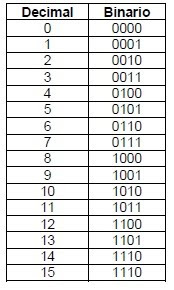Como te puedes dar cuenta, el 1 en este sistema indica un valor y para representar un valor más grande simplemente recorremos el uno a la izquierda, así podemos representar su igual en decimal, que es el sistema que ya conoces
Suma en binario
Para realizar una suma, haremos lo mismo que se hace en un sistema decimal, sumar XD.
Pero primero debes conocer 4 equivalencias básicas para la suma en binario.

Y listo, ya sabes sumar en binario 👍👍👍
Como podes darte cuenta, es así de sencillo, ahora como un ejemplo te dejo la siguiente imagen donde podes apreciar una suma sencilla

Resta en binario
Para restar en binario es sencillo, es como la suma, necesitas una tabla de reglas, pero acá tendrás un acarreo negativo.

Acá te dejo un ejemplo para que veas como funciona

Multiplicación en binario
Al igual que en la suma y la resta, acá tenemos 4 reglas básicas, te las dejo en una tabla
En fin, se multiplica igual que los decimales pero cuando hagas la suma, recuerda las reglas de la suma binaria
Errores
¿Qué son los errores? En palabras simples los errores son inexactitudes, malos cálculos, errores de dedo y cualquier otra falencia producida en el momento en el que se calcula o mide algo y que es diferente del valor mas exacto o “real”.
Error Absoluto
El error absoluto es el error que se produce cuando se calcula un valor y se obtiene un resultado diferente al que se esperaba. Es sencillo, se trata del error que cometiste de cualquier forma y es diferente del valor real, para medirlo solo debes usar la siguiente formula Error Absoluto = |Valor que mediste - Valor verdadero o “real”| Su nombre viene del valor absoluto ya que nosotros no sabemos si el error fue aumentándole o reduciéndole valor a la medición, por eso se usa el valor absoluto
Error relativo
El error relativo se calcula dividiendo el Erro Absoluto entre el valor “real” Al igual que el error absoluto puede ser positivo o negativo porque puede se puede producir por exceso o por defecto y al contrario que él no viene acompañado de unidades. Error Relativo = Error absoluto/Valor real ¿para que sirve? El error relativo sirve de indicador de la calidad de una medida. Para entender este concepto utilizaremos otro ejemplo. Imagina que se comete un error absoluto de 1 metro al medir una calle de 200 metros y otra de 3000. Si calculamos los errores relativos en ambas mediciones tenemos que son 1/200 y 1/3000. Dado que en la segunda medición el error relativo es más pequeño quiere decir que la calidad de la medida es mucho mejor que la de la primera. Y de hecho si lo piensas bien, es mucho mejor equivocarse en un metro cuando cuento 3000 metros que cuando cuento 200 metros. 👍👍
Error porcentual
Error Porcentual Este viene de la mano del error relativo y básicamente sirve para dar un significado porcentual de cuánto te equivocaste
Se calcula: Error porcentual = Error Relativo*100
Error de redondeo
Este error se da cuando la computadora o calculadora trabajan con ciertos redondeos luego de cierto punto para dejar espacio en pantalla El error de redondeo se calcula asi: Error redondeo = |Error Absoluto|≤0.5*10-cantidad dígitos Ejemplo: Valor real 3.865672 redondeado a x decimales, en este caso 4 ERd = |3.865672-3.8656|≤0.5*10^-4 Y si la condición sale verdadera, hubo un error considerable
Error de redondeo
Los errores por truncamiento son aquellos que resultan al usar una aproximación en lugar de un procedimiento matemático exacto. Siendo la formula: ERt= |Valor real-valor usando aproximacion|≤1*10-cantidad dígitos Si queremos saber el valor del numero de Euler seria e= 1+ 1/1! + 1^2/2! y asi sucesivamente El punto del error de truncamiento es ver cuantas veces tendremos que repetir la serie hasta que el valor que obtenemos según la aproximación, sea igual al valor real, dependiendo de cuantos decimales nos pongamos de limite, quedando asi: Valor de e usando 5 iteraciones = 2.7166666 Valor real de e = 2.718281828 Usando 6 decimales ERt = |2.718281828-2.7166666|≤1*10^-6 Si sale falso significa que debemos seguir aumentando iteraciones hasta que salga verdadero
Ecuaciones lineales
Son ecuaciones facilangas de primer grado que se pueden resolver con algebra generalmente, no quiero hondar en este tema porque... es fácil, es de colegio XD, pero quizá lo haga en un futuro.
Ecuaciones no lineales
Para dar solución a estos problemas existen distintos algoritmos o métodos para encontrar las raíces de f(x) = 0, pero debemos tener en cuenta que ninguno es general, pues en otras palabras no existe un método que funcione con todas las ecuaciones perfectamente.
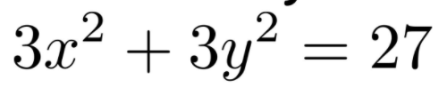Método de Newton Raphson
-Para este método primero se nos da una función f(x) -graficamos la función manualmente o en un graficadora para ver en que punto la función se intersecta con el eje x y ese punto seria nuestro valor real, y para poder efectuar las ecuaciones no lineales, nos damos un punto cercano, ej si se intersecta en el punto 1.8, nuestra Xo seria por ejemplo 1 -Nos damos un error -Derivamos la función 1 vez -usamos la formula: Xo-(Funcion original / Funcion derivada 1 vez) En esa formula debemos poner las funciones como dice, pero reemplazando las x que hay en esas funciones por Xo para que nos de 1 numero -Luego restamos ese numero a Xo en valor absoluto: |xo-g(x)| -Verificamos si ese numero que nos dara la resta, es menor o igual al error que nos propusimos al inicio y si es verdadero, ahí termina la tabla -Caso contrario si es falso, entonces el numero que sacamos con la formula(g(x)) pasara a ser el nuevo Xo y volvemos a reemplazarlo en la formula, y asi el proceso se repite
Aquí una imagen de la tablita de errores por iteración
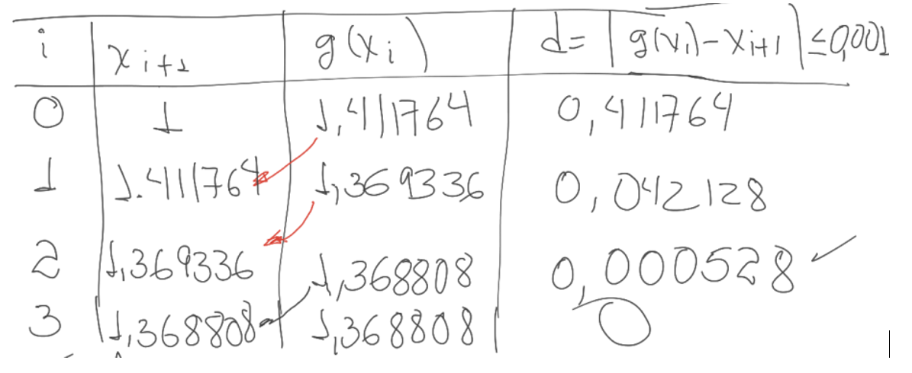Método de Newton de segunda orden
Metodo newton 2do orden -Para este método primero se nos da una función f(x) -graficamos la función manualmente o en un graficadora para ver en que punto la función se intersecta con el eje x y ese punto seria nuestro valor real, y para poder efectuar las ecuaciones no lineales, nos damos un punto cercano, ej si se intersecta en el punto 1.8, nuestra Xo seria por ejemplo 1 -Nos damos un error -Derivamos la función 2 veces -usamos la formula: Xo-((Funcion original*Funcion derivada 1 vez)/(( Funcion derivada 1 vez)^2 – Funcion original * Funcion derivada 2 vez)) En esa formula debemos poner las funciones como dice, pero reemplazando las x que hay en esas funciones por Xo para que nos de 1 numero -Luego restamos ese numero a Xo en valor absoluto: |xo-g(x)| -Verificamos si ese numero que nos dara la resta, es menor o igual al error que nos propusimos al inicio y si es verdadero, ahí termina la tabla -Caso contrario si es falso, entonces el numero que sacamos con la formula(g(x)) pasara a ser el nuevo Xo y volvemos a reemplazarlo en la formula, y asi el proceso se repite
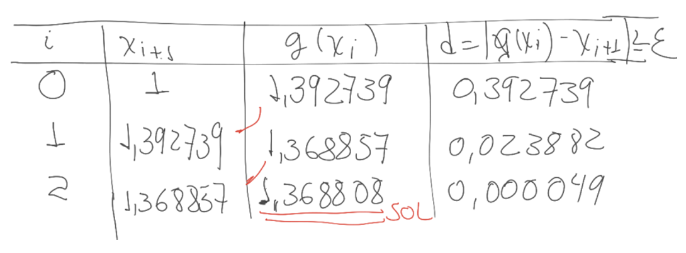Método de la Secante
--Para este método primero se nos da una función f(x) -graficamos la función manualmente o en un graficadora para ver en que puntos la función se intersecta con el eje x y ese punto seria nuestro valor real, y para poder efectuar las ecuaciones no lineales, nos damos 2 puntos cercanos que rodeen al punto en la graficadora y que serian nuestros Xo y Xo-1; por ejemplo si el punto marca 2, nos dariamos 1.5 como Xo-1 y 2.4 como Xo -Nos damos un error -usamos la formula: Xo-(((Xo-Xo-1)*Funcion original usando Xo)/( Funcion original usando Xo - Funcion original usando Xo-1)) Recuerda que Xo-1 es el nombre de la varible, no una operación aparte En esa formula debemos poner las funciones como dice, pero reemplazando las x que hay en esas funciones por Xo y Xo-1 cuando se requiera para que nos de un numero -Luego restamos ese numero a Xo en valor absoluto: |xo-g(x)| -Verificamos si ese numero que nos dara la resta, es menor o igual al error que nos propusimos al inicio y si es verdadero, ahí termina la tabla -Caso contrario si es falso, entonces el numero que sacamos con la formula(g(x)) pasara a ser el nuevo Xo y el Xo anterior pasara a ser el nuevo Xo-1 volvemos a reemplazarlos en la formula, y asi el proceso se repite
Método de Regula Falsi
-Se nos da una ecuación -graficamos la función manualmente o en un graficadora para ver en que puntos la función se intersecta con el eje x y ese punto seria nuestro valor real, y para poder efectuar las ecuaciones no lineales, nos damos 2 puntos cercanos que rodeen al punto en la graficadora y que serian nuestros XI y XD; por ejemplo si el punto marca 4, nos dariamos 3.4 como XI y 5.4 como XD -Nos damos un error -Utilizamos la formula para hallar Xm que es: Xm= XD-(((XD-XI)*Funcion original usando XD)/( Funcion original usando XD- Funcion original usando XI)) - En esa formula debemos poner las funciones como dice, pero reemplazando las x que hay en esas funciones por XD y XI cuando se requiera para que nos de Xm -Luego ponemos Xm dentro de un valor absoluto y verificamos si es menor o igual al error planteado, si es verdadero ahí termina el ejercicio -Caso contrario si es falso, entonces el numero que sacamos con la formula(ósea Xm) pasara a ser el nuevo XI y asi el proceso se repite (XD no se cambia para nada durante todas las iteraciones)
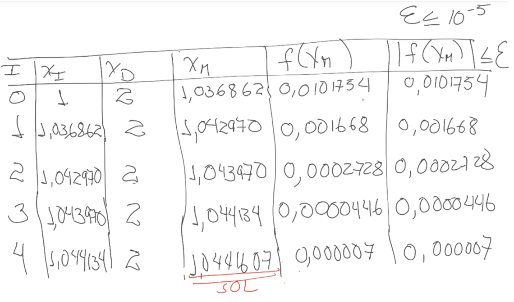Método de bisección
Se nos da una ecuación -graficamos la función manualmente o en un graficadora para ver en que puntos la función se intersecta con el eje x y ese punto seria nuestro valor real, y para poder efectuar las ecuaciones no lineales, nos damos 2 puntos cercanos que rodeen al punto en la graficadora y que serian nuestros XI y XD; por ejemplo si el punto marca 4, nos dariamos 3.4 como XI y 5.4 como XD -Nos damos un error -Utilizamos la formula para hallar Xm que es: Xm= (XI+XD)/(2) -Luego de obtener Xm, reemplazamos Xm en la función original para obtener otro numero F(Xm) -Verificamos si el valor absoluto de Xm -XI es menor o igual al error,si es verdadero ahí termina el ejercicio -Caso contrario si es falso, hay 2 rutas posibles que debemos tener en cuenta, 1.Si F(Xm) es positivo entonces Xm pasa a ser la nueva XI y XD se mantiene intacta e iteramos de nuevo 2, Si f(Xm) es negativo entonces Xm pasa a ser la nueva XD y XI se mantiene intacta e iteramos de nuevo En todo caso continuamos asi hasta que hayamos verificado si el valor absoluto de Xm -XI es menor o igual al error planteado al principioBueno, la mayoría de estos métodos solo son métodos numéricos para hallar la resolución numérica de ecuaciones no lineales, todos hacen lo mismo, pero de diferente forma.
Sistemas de ecuaciones lineales
¿Qué son las ecuaciones lineales?
Método de eliminación de Gauss por pivote
¿Qué es? Es un método para resolver sistemas de ecuaciones lineales, también se llama reducción de fila 👍(Row Reduccion en inglés).
¿En qué consiste? Bueno, es simplemente sacar los coeficientes de tu sistema de ecuaciones y operar entre ellos, podes hacer 3 procedimientos.
- Intercambiar 2 filas.
- Multiplicar por un número que no sea 0 obviamente.
- Sumar el multiplo de una fila a otra fila
Ok, opero con eso, pero no entiendo, ¿qué forma tengo que darle? Bueno, es bastante sencillo en realidad, lo que tenes que hacer es formar una matriz escalonada reducida, sencillo 👍.
Ok, ¿Qué es una matriz escalonada reducida? Bueno, empecemos por que es una matriz escalonada, una matriz escalonada es simplemente una matriz donde los renglones de la parte inferior de la matriz están en 0, de manera que hace como una escalerita de 0s 😯🤯🤯🤯🤯
Tiene la siguiente forma una matriz escalonada.
Y esta es una matriz escalonada reducida.
Los procedimientos se realizan de esta manera.
Podes ver mi algoritmo en el código fuente, o sea, aqui
Sin mas, resolvamos con el método de Gauss
Ingresa el alto y ancho de la matriz
Método de Jacobi
¿Qué es el método de Jacobi?
Bueno, es un método iterativo para "determinar" la solución de un sistema de ecuaciones con características de matriz dominante diagonal, es decir, el número de la diagonal es mayor o igual a la suma de los número en su respectiva fila y es cuadrada.
¿Cómo se resuelve?
Bueno, simplemente hay que entender que la matriz se compone de 3 partes, (Como la formula indica, A = D + L + U), donde A es la matriz, D es la diagonal, L es la parte inferior de la diagonal, y U es la parte superior de la diagonal. Después de eso solo despejamos una x y vamos iterando con la matriz inicial
Ingresa el alto y ancho de la matriz
Método de Gauss-Seidel
¿Qué es el método de Gauss-Seidel?
Es un método iterativo de aproximacion igual que el de Jacobi, sirve para resolver sistemas de ecuaciones lineales, tiene ciertos requisitos.
- Ser diagonalmente dominante o [ simetrica y positiva definida ].
¿Cómo se resuelve con este metodo?
Aqui una explicación larga de esto
Interpolación
La interpolación es una técnica que se usa para la obtención de nuevos puntos partiendo de puntos que ya conocemos, es como "suponer" la forma de algo por conocer ciertos puntos. 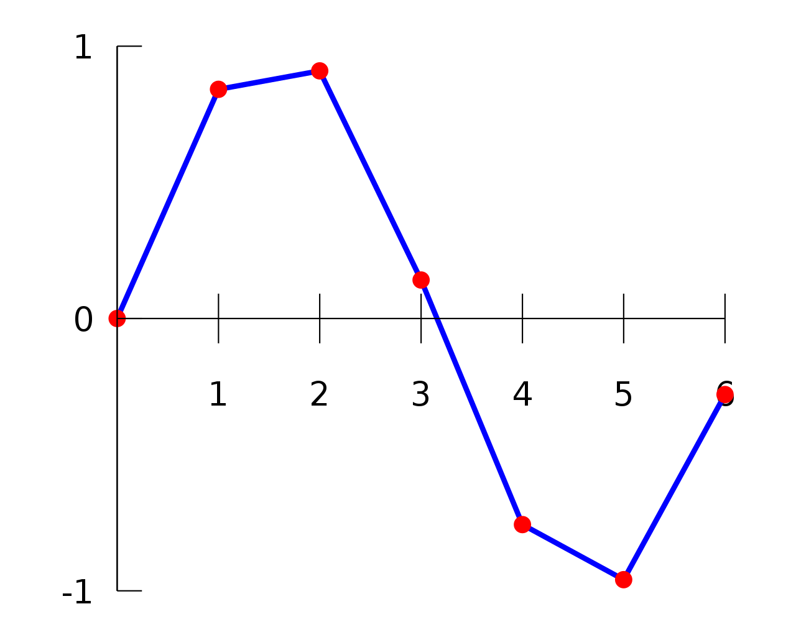
Acá tenemos algunos metodos no lineales para hacer interpolación, los describiré abajo
Newton atrás
-Se nos da una tabla con valores de x y f(x) para hallar el valor de la funcion cuando x sea un numero dado, hasta una derivada dada En este caso Xp=0.161 -Ademas debemos verificar si la distancia entre cada numero de la columna x es equidistante, es decir, que tienen la misma separación para poder usar los métodos de newton, para ello solo restamos cada miembro de la columna de x(empezando desde abajo) del siguiente que le sigue, y si el resulta siempre es el mismo entonces proseguimos 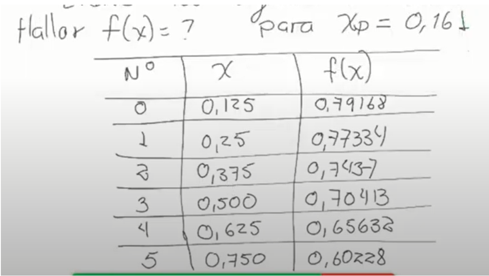
-Entonces siendo este el método de newton desde atrás, debemos primeramente restar la ultima f(x) con la penúltima f(x), luego la penúltima con la antepenúltima y asi sucesivamente hasta que no quede otro con que restar, asi completando la primera derivada
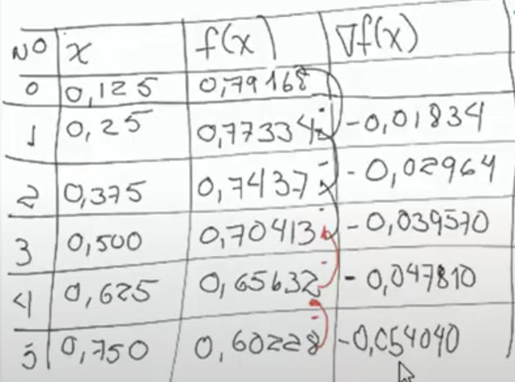Quedando así
-Y bueno en realidad luego debemos hacer lo mismo en la siguiente columna restando el ultimo con el penultimo, luego el penultimo con el antepenultimo etc etc
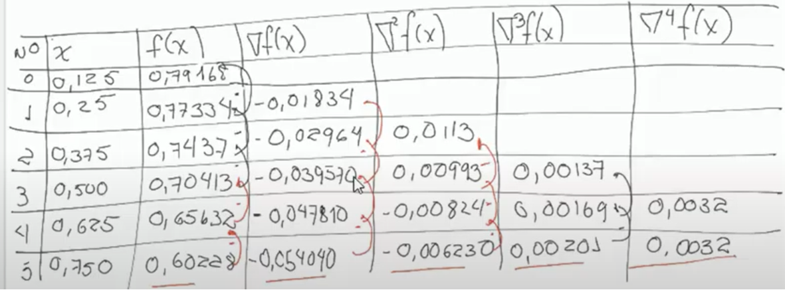-Quedando asi la tabla, entonces debemos guardar los últimos números de cada columna empezando por f(x) y terminando en 4f(x) (Aquí hay que tener en cuenta que obviamente si hay mas números, seguiremos haciendo mas columnas o si nos piden solo hasta cierta derivada, nos detendremos ahí, aunque para obtener los resultados mas exactos es mejor seguir iterando hasta que no queden mas columnas) -anotamos h que es el numero de distancia que tiene cada numero entre si en la columna de x, en este caso h = 0.125 -Efectuamos la formula para hallar P Donde: P= (Xp-Xo)/h Siendo Xp el valor que se nos dio al principio Xo el ultimo valor de la columna x h la distancia entre los valores de x -Finalmente usamos la formula: F(Xp)=Ultimo numero de la columna x+ (((Ultimo numero de la columna de la primera derivada)*P)/1!) + (((Ultimo numero de la columna de la segunda derivada)*P*(P+1))/2!)+((Ultimo numero de la columna de la tercera derivada)*P*(P+1)*(P+2))/3!) …. Y asi sucesivamente y como se muestra aumentando una multiplicación de (P+n) e igualmente diviendo entre n+1! -Y para hallar el error debemos primeramente solo calcular hasta la penúltima derivada y anotar ese numero, luego calcular hasta la ultima derivada y anotar ese numero, para que finalmente restemos esos 2 numeros dentro de un valor absoluto y tendremos el error final.
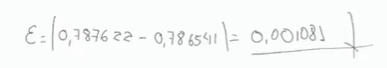Newton Adelante
-Se nos da una tabla con valores de x y f(x) para hallar el valor de la funcion cuando x sea un numero dado, hasta una derivada dada En este caso Xp-=64 -Ademas debemos verificar si la distancia entre cada numero de la columna x es equidistante, es decir, que tienen la misma separación para poder usar los métodos de newton, para ello solo restamos cada miembro de la columna de x(empezando desde arriba) del siguiente que le sigue, y si el resulta siempre es el mismo entonces proseguimos
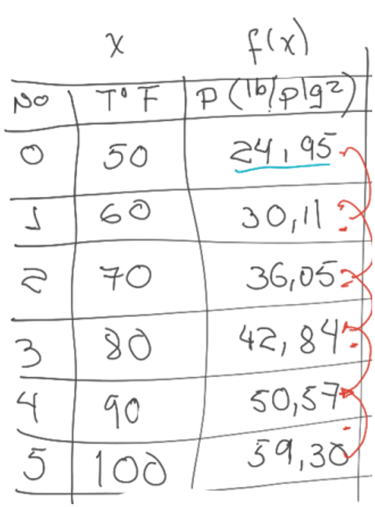-Entonces siendo este el método de newton desde adelante, debemos primeramente restar la primera f(x) con la segunda f(x), luego la segunda con la tercera y asi sucesivamente hasta que no quede otro con que restar, asi completando la primera derivada
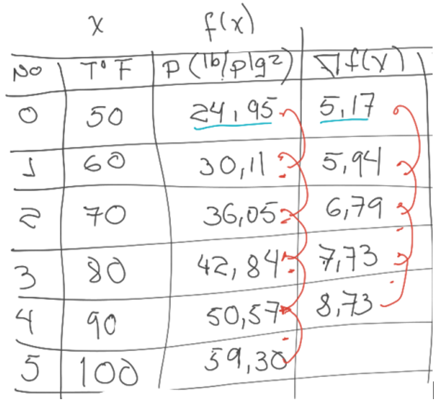Quedando así
-Y bueno en realidad luego debemos hacer lo mismo en la siguiente columna restando el primero con el segundo, luego el segundo con el tercero etc etc
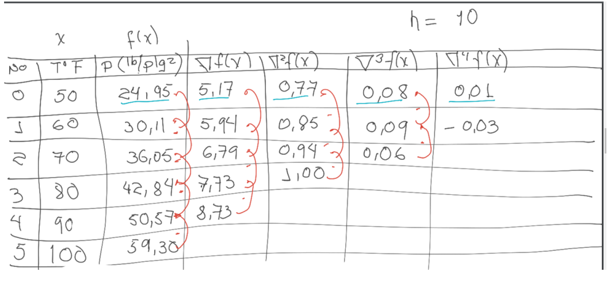-Quedando asi la tabla, entonces debemos guardar los primeros números de cada columna empezando por f(x) y terminando en 4f(x) (Aquí hay que tener en cuenta que obviamente si hay mas números, seguiremos haciendo mas columnas o si nos piden solo hasta cierta derivada, nos detendremos ahí, aunque para obtener los resultados mas exactos es mejor seguir iterando hasta que no queden mas columnas) -anotamos h que es el numero de distancia que tiene cada numero entre si en la columna de x, en este caso h = 0.125 -Efectuamos la formula para hallar P Donde: P= (Xp-Xo)/h Siendo Xp el valor que se nos dio al principio Xo el ultimo valor de la columna x h la distancia entre los valores de x -Finalmente usamos la formula: F(Xp)=Primer numero de la columna x+ (((Primer numero de la columna de la primera derivada)*P)/1!) + (((Primer numero de la columna de la segunda derivada)*P*(P+1))/2!)+((Primer numero de la columna de la tercera derivada)*P*(P+1)*(P+2))/3!) …. Y asi sucesivamente y como se muestra aumentando una multiplicación de (P+n) e igualmente diviendo entre n+1! -Y para hallar el error debemos primeramente solo calcular hasta la penúltima derivada y anotar ese numero, luego calcular hasta la ultima derivada y anotar ese numero, para que finalmente restemos esos 2 numeros dentro de un valor absoluto y tendremos el error final. 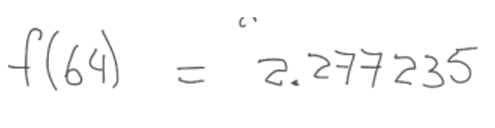